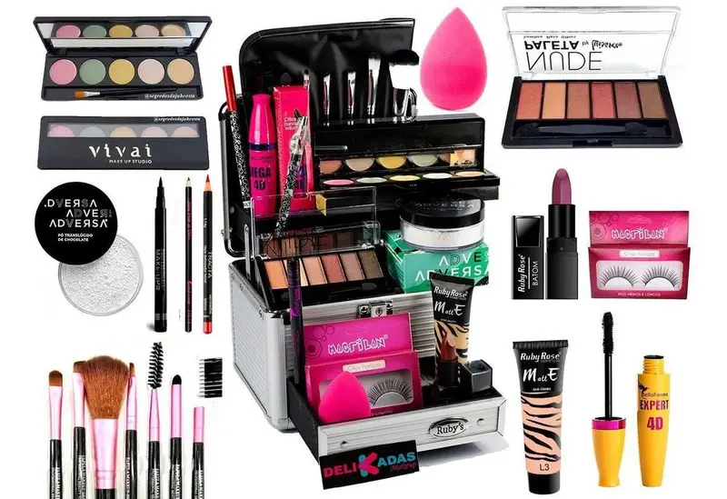

Passo 1: escolha e separe os produtos certos para se maquiar
- Base: ela é indispensável para uniformizar a pele e deve ser escolhida de acordo com o que você quer como efeito na make. Para cobrir bem as manchinhas, prefira a base de alta cobertura. Já para um ar mais natural e leve, vá com a base de média cobertura. Lembrando que o tom deve ser exatamente igual ao da sua pele!
- Corretivo: é o item perfeito para anular as olheiras e criar pontos de luz no rosto. Esse produto deve ser do tom da sua pele caso queira um efeito suave, ou de um a dois tons mais claro que o seu rosto se preferir um efeito bem iluminado;
- Pó: vai ser o responsável por selar os produtos líquidos usados na pele e deixar um ar mais sequinho na make. Aqui, vale preferir a versão translúcida pela praticidade e longa duração que ela oferece;
- Blush: pode ser rosa, bronze ou até pêssego, tudo depende da cor da sua pele e do efeito que achar mais bonito. Aposte na versão em pó para dosar bem o acabamento dele no rosto;
- Iluminador: dá o toque final perfeito na pele, garantindo aquele ar de saúde glowy para qualquer ocasião. Escolha entre o produto rosado para peles claras ou dourado para peles morenas e negras;
- Máscara de cílios: ajuda a deixar os cílios bem destacados e dramáticos, valorizando o olhar. Experimente tentar uma fórmula leve e que garanta bastante volume;
- Sombra: para começar, é interessante apostar em uma paleta de cores mais neutras com vários tons de nude. Assim o item vai ser coringa na nécessaire!
- Batom: escolha o tom que achar melhor, seja colorido ou mais neutro. Quanto ao tipo, vale tentar a versão em bala ou lápis para facilitar a aplicação.
QUEM INVENTOU A MAQUIAGEM?
A Maquiagem surgiu no Egito Antigo por volta de 3.000 a.C., onde a pintura dos olhos era feita com o objetivo de refletir sua alma através dos olhos. Essas pinturas eram feitas com o Kohl, um pigmento preto usado como sombra para sublinhar o contorno dos olhos e das sobrancelhas.
A ORIGEM DA MAQUIAGEM
Você conhece a história da Maquiagem? Sabia que ela não surgiu só agora? Desde o começo, os povos já usavam a maquiagem como uma forma de embelezamento, comunicação e força. Antes das guerras, de acordo com desenhos e cores usadas, podia-se dizer qual a origem de cada pessoa, até mesmo de qual grupo ou região faziam parte. Incrível né?.
HISTORIA DA MAQUIAGEM
A maquiagem foi originada no Egito, onde pintavam os olhos para protegê-los, já que eram considerados os espelhos da alma, e também em sinal de respeito ao deus do sol.
Diversos outros povos também utilizavam pinturas no rosto, muitas vezes como artifício para diferenciar membros de cada aldeia, celebração de rituais religiosos, para firmar condição de guerra entre povos e também simbolizar a passagem de fases da vida.
Na idade média a maquiagem era muito usada para representar o frescor da pele, tentando assim se assemelhar a pele das crianças, disfarçando as diversas doenças sem tratamento que existiam na época.
Entre os século XVIII e XIX a maquiagem passou a ser vista com maus olhos, o Parlamento Inglês atribuiu às mulheres a mesma pena que era atribuída à quem praticava a bruxaria. O marido poderia pedir o divórcio se descobrisse que esses elementos foram usados para conquistá-lo e induzi-lo ao casamento.
No século XX a maquiagem passou a ser muito usada em todo o mundo, porém nos períodos da 1º e 2º guerra mundial a produção estacionou, por causa da necessidade de produzir armamento e a escassez de matéria-prima. Nesse período algumas mulheres passaram a produzir seus próprios produtos de beleza e essa produção foi se disseminando pelo mundo.
Depois da guerra a maquiagem se tornou muito popular, sendo usada também como uma forma das mulheres se recuperaram do horror da guerra e encontrarem novamente o seu poder feminino. Divas do cinema e posteriormente da música também ajudaram a popularizar ainda mais o uso de diferente maquiagens.
Conforme os produtos foram evoluindo deixaram de ser usados apenas com função estética e passaram a também prevenir o envelhecimento, proteger a pele dos efeitos solares,hidratá-la entre outras funções que a maquiagem exerce nos dias de hoje. Se você se interessa por esse tema e quer se tornar um profissional da área da maquiagem conheça nosso curso de Make Up Design..
